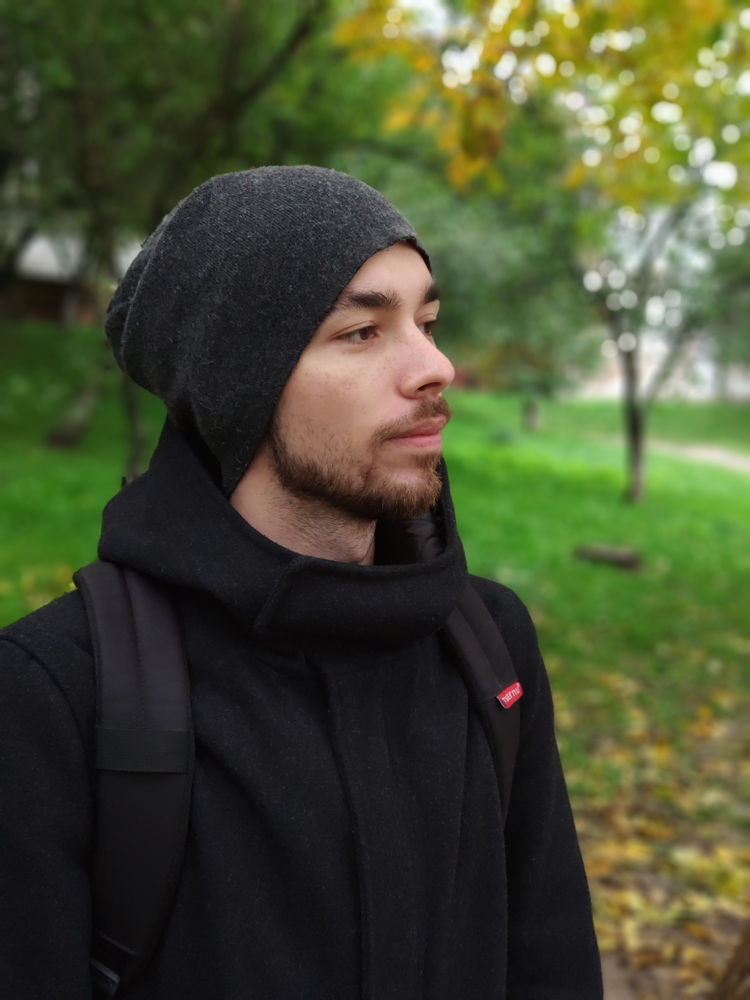

Бутник-Сиверский Максим


Дата рождения: 29.11.1996 (24 года)
Город: Киев
E-mail: maxbsiv@gmail.com
Моб. номер: (066) 021-21-29
Опыт работы
Системный администратор
С 27.11.2017 по 17.03.2020 (2 года 5 месяца)
«Evoplay», Киев (IT-Support)
В мои обязанности входило:
- Подготовка и выдача техники для новых сотрудников
- Настройка Windows/Unix операционных систем
- Поиск и решение программных и аппаратных проблем
- Настройка шифрования почты (gpg suite, gpg4win, enigmail)
- Шифрование операционных систем
- Работа с Active Directory
- Работа с СКС на базовом уровне
Провёл турнир по CSGO внутри компании (поднятие и поддержание выделенного сервера)
Образование
«КРОК»
Финансы, банковское дело и страхование, Киев
Магистр, с 09.2017 по 02.2019 (1 год 6 месяцев)
Дополнительное образование
- Курсы английского языка, с 2007 по 2011 (4 года)
Знание языков
- Украинский – родной
- Русский – родной
- Английский – B2
Дополнительная информация
Ответственный, выполняю работу как для себя, общительный. Имею свою точку зрения, учитываю чужое мнение, не против компромиссов если они обоснованы. Положительно отношусь к аргументированным жалобам, это помогает работе над ошибками.